Parcels
Nov 13, 2026
Howdy! I've been hard at work adding a bunch of new functionality to the game, as well as some much-needed performance improvements. In this dev log, you'll see some important systems begin to take shape, like public transit, industry, traffic AI, visuals, and more.

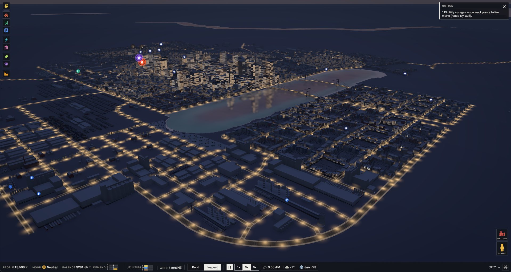
Metro at night.
Roads
Roads received an overhaul. They are now modeled with a modular lane system, and you make any combination of lanes you want to produce a road. Choose from car, bus, median, shoulder, parking, tram, light rail (yes, light rail!), bike, or a promenade. You can also set the sidewalk width, street trees, a speed limit, and save the preset to use it later. Upcoming is more fine-tuned control on intersections, allowing you to set priority or yield, map specific lanes from one to another, change traffic signal behavior, and more!
Roads now also support elevation and various bridge designs. Up next would be to add tunnels (already in work for the train system I'm adding).

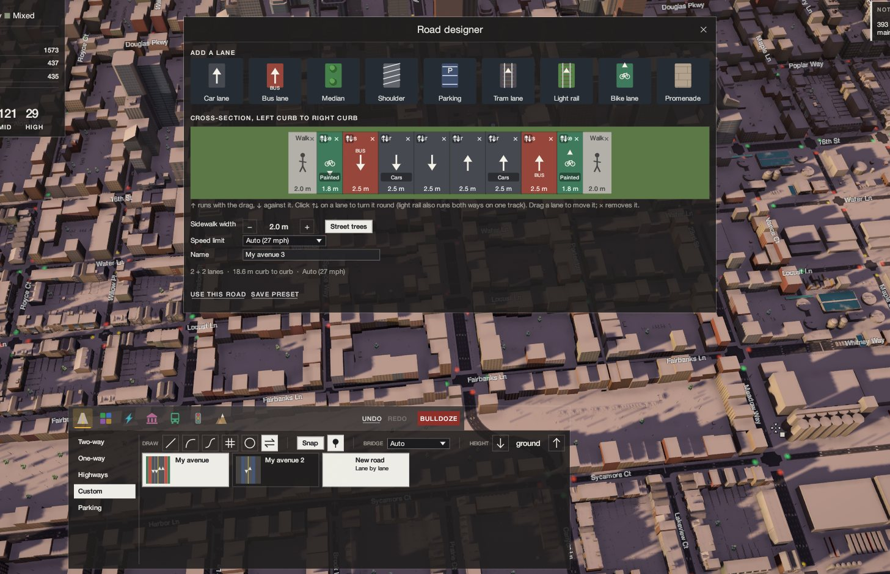
The new road designer tool.
Industry
Industry now has specialization - you can choose what a industry parcel should be making or extracting. You can also take a look at the map for where natural resources are located, and build a parcel on top. Depending on the current market conditions (what's paying the most or in demand right now), the parcel will auto-specialize. If you have a surplus in a resource, your city exports it to neighbors. You can levy taxes on those exports, as well as imports, on a per-resource basis. This gives you great control over how the economy flows.

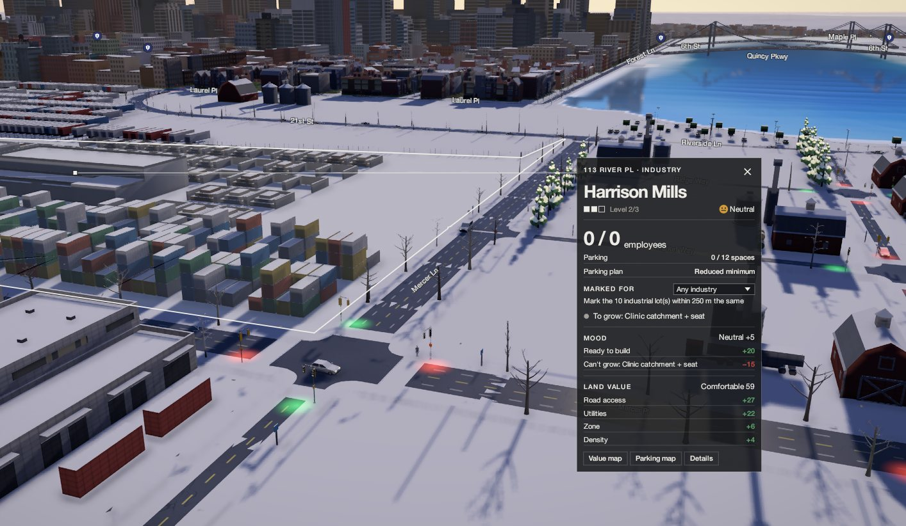
The parcel card for an industrial lot.
The industry chain is the city-wide view of these lots. Grain, timber, ore, and oil sit on the left. Food, lumber, metal, fuel, goods, machinery, chemicals, chips, and electronics sit in the middle. Medicine, services, vehicles, homes, and freight sit on the right, and spoiled goods fall out when something in the chain stalls. The color indicates a surplus, tight margin, or deficit.

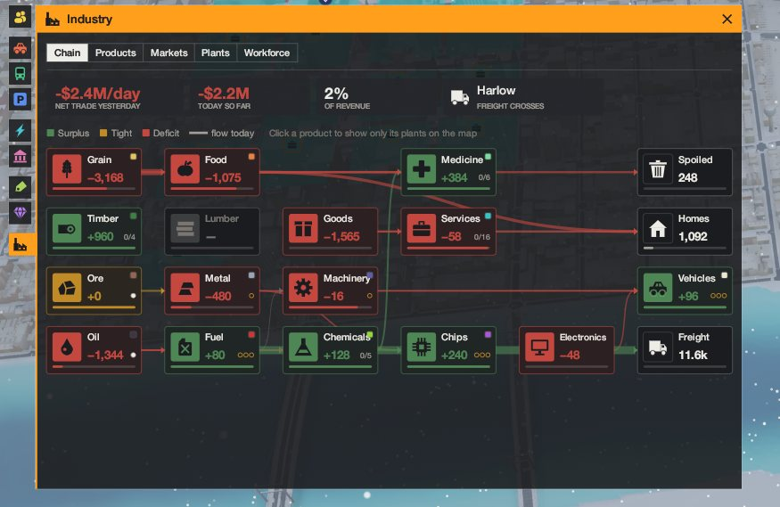
The day’s flow, from raw materials to homes, freight, and spoilage.

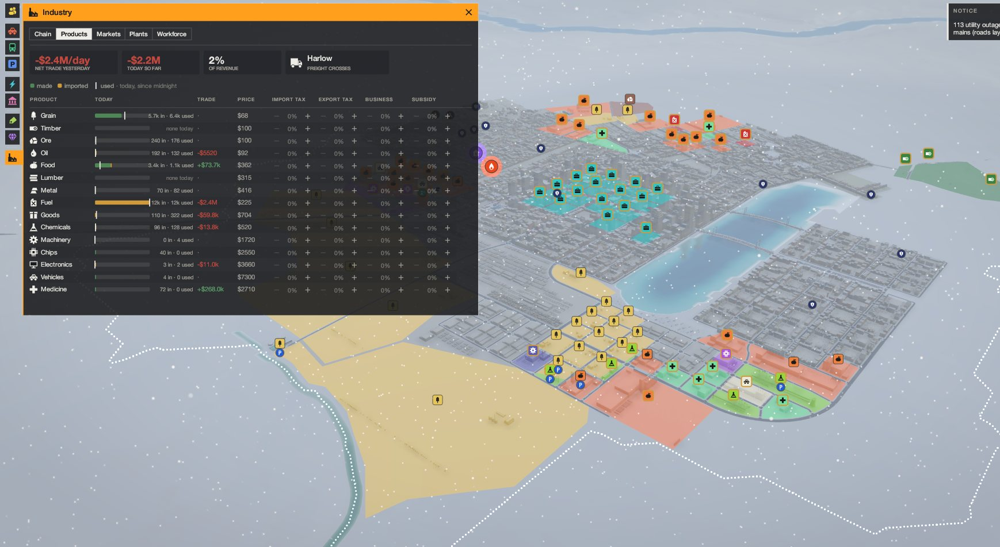
Prices, taxes, and the subsidy, with the plants filtered onto the map.
On the street
Streets look so much better, and I'm real happy with how it turned out. Lights actually cast light onto materials, curbs were redesigned so that meshes don't cut into terrain, and streets get names! You can actually see street names on the map as you pan and zoom around. This also means each parcel gets an address.

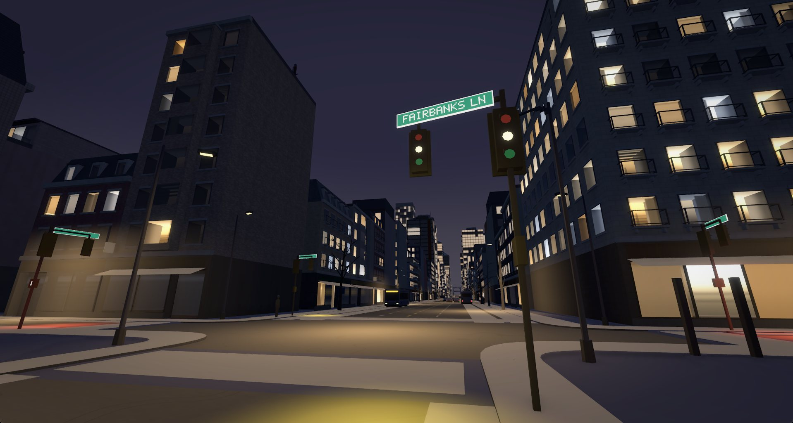
Fairbanks Lane.
A block over, traffic looks pretty heavy. You can inspect or follow vehicles and people. Totally extra, but you can also ride the bus by walking up to it or clicking Ride Along! I plan on adding a bunch of these interactive elements so you can feel like a real citizen of the city you are building.

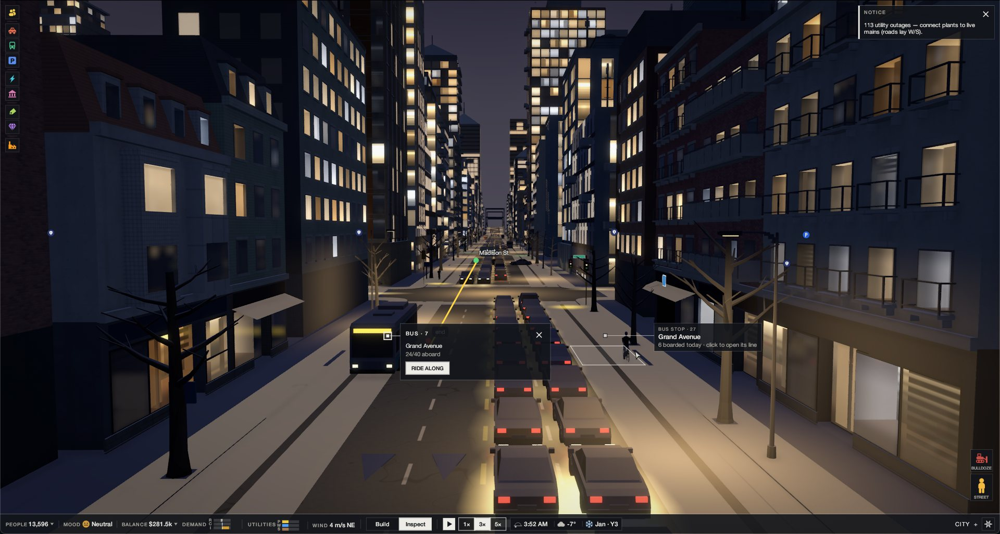
Grand Avenue.

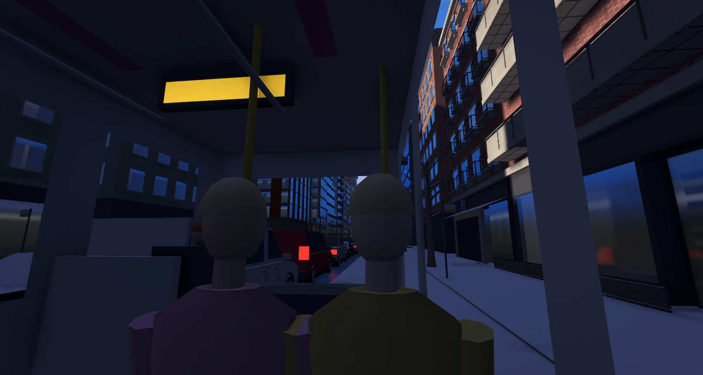
Ride the bus!
Regional planning and Land Purchase
The map currently is a solid 25km by 25km, and, if performance allows, I'll try to scale it up to the limit. With play testing on a 100k gigacity, I was able to get 60fps and up to 5x tick speed on the sim (on an M1 MacBook Pro)! I might go into these performance stats in a later dev log. I copied a metro demo city 20x to stress test. The next stress test would be a 100x test of the metro (500k population).
I also added purchasable map tiles that follow the contours of the generated environment. It's a bit more interesting than a monotonous grid, and is more like what real-world city land purchases would look like.

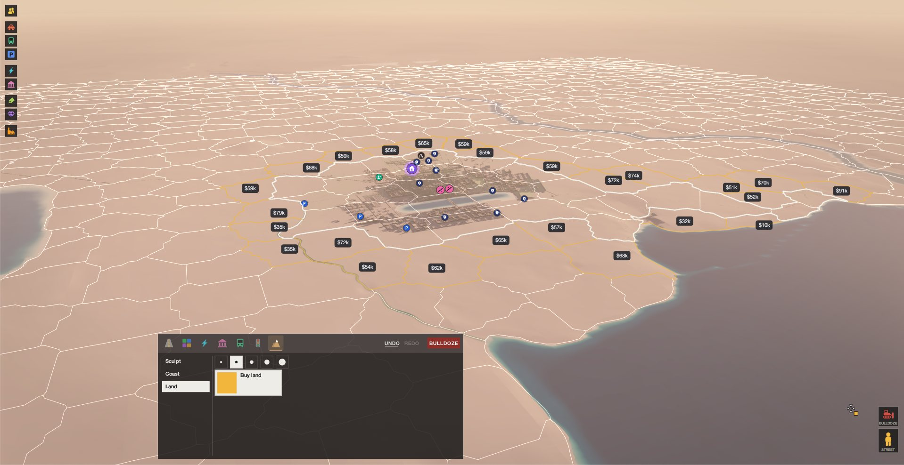
Priced tiles outside the city. Price takes into account existing land purchased, natural resources, and land area.
Outside the City
New tree designs and seasons create beautiful environments. Maps are also all generated and seed-based, so there are a wide variety of map designs to fit every play style.

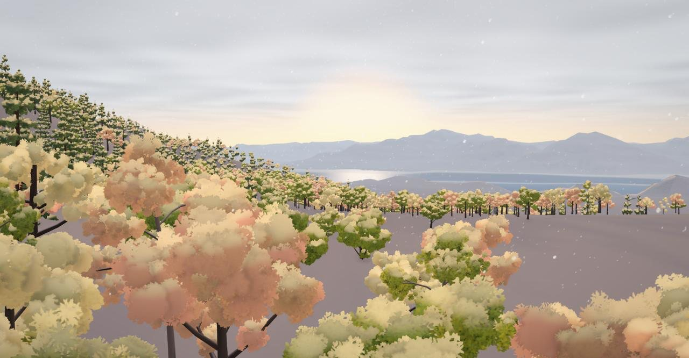
Fall color with early snow - one of my most favorite shots.

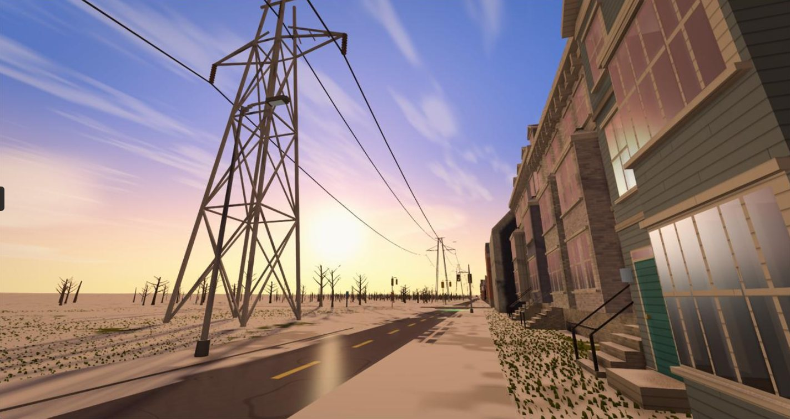
Transmission towers along a snowy block at sunrise.

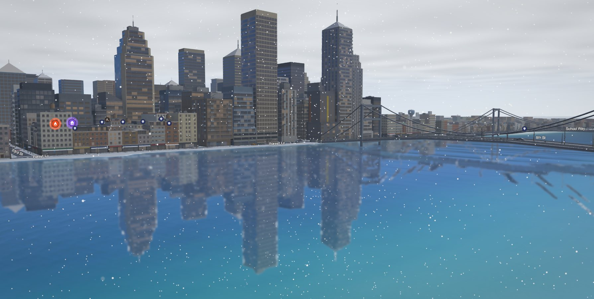
The downtown skyline with SSR reflections in the water.
What's next
Right now, the gameplay loop feels quite repetitive, as many other sims of this nature are. Have demand? Build a grid, zone, place services. More demand? Repeat. There isn't much more to it, unless you get really deep into the design details. Yes, money can get tight, and this game also has a comprehensive economic model that takes into account things like trade taxes, credit rating, and neighbor pressure, but I don't think it is enough. What makes a good grand strategy game?
To solve this problem, I bring in the neighbors. Your peer cities want everything you do: they want their city to prosper, have an edge on taxes, bring in more money, and increase in population. All the while, you need to choose whether to play nice or dirty - cooperate, or undercut the competitors. Then you have the state. They fund big projects, for a price. You also have citizen representatives, land developers, and industry magnates all vying for your attention. Think of it as a city among cities. Every reply you make changes things, and your decisions stick for many months or years to come.
You, Mr. City Planner, have a big job ahead of you.
Back to top · Back to projects
© 2026 Daniel Yamakov